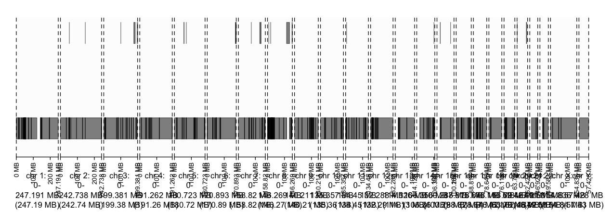
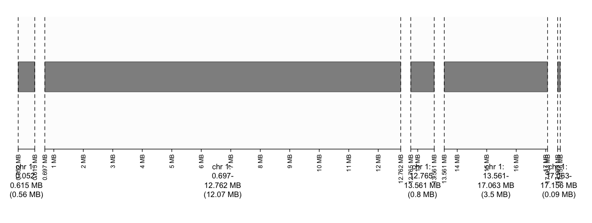
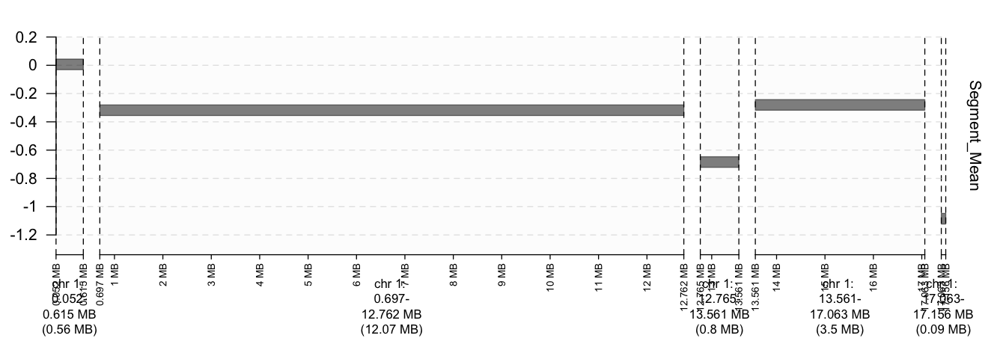
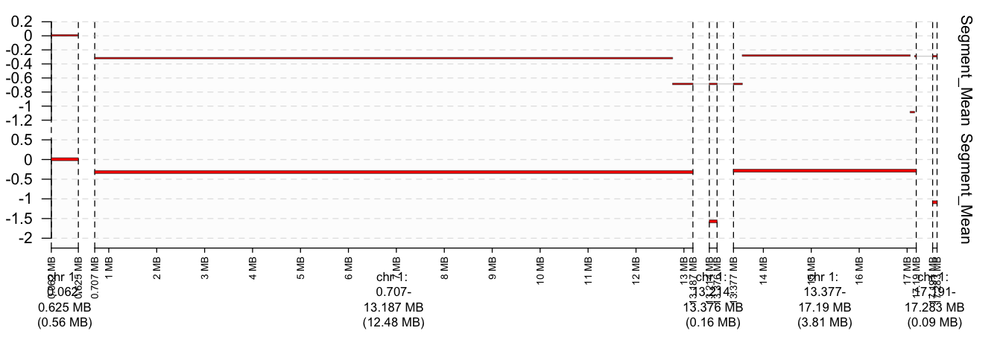
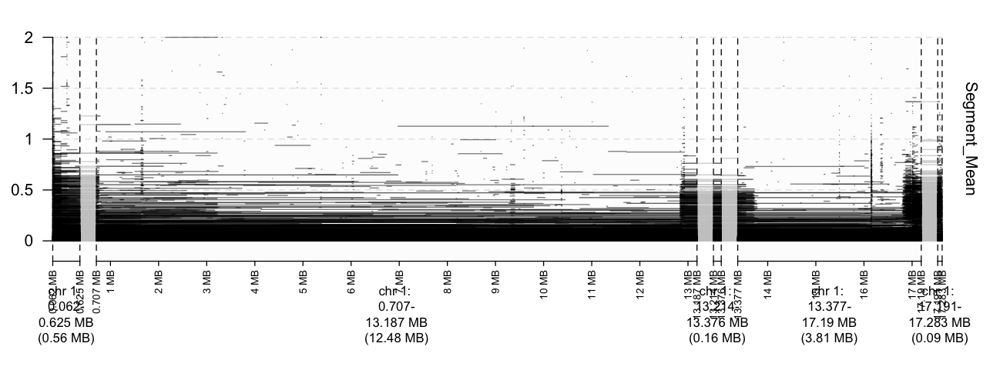
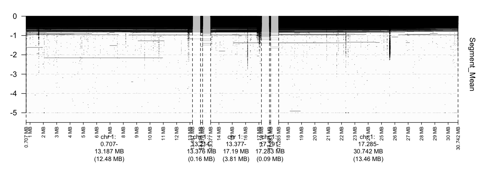

Tutorial
# make sure to load gTrack library(gTrack)
# load data from TCGA tcgaData <- read.delim("inst/extdata/BEAUX_p_TCGA_b109_SNP_2N_GenomeWideSNP_6_A01_772082.hg18.seg.txt") # convert data.frame to GRanges object tcgagr <- GRanges(tcgaData) # wrap gTrack around TCGA GRanges object tcgagt <- gTrack(tcgagr) # plot gTrack object plot(tcgagt)

# Changed default number of windows (from entire genome to the first five windows). # Windows argument requires a subset of a GRanges Object. Check documentation for more details. plot(tcgagt , window = tcgagr[1:5])

# use amplifications/deletions as y-values tcgagt <- gTrack(tcgagr , y.field="Segment_Mean") plot(tcgagt , windows = tcgagrr[1:5] , col = "red")

# add a second sample to the graph # create gTrack object for sample tcgaData2 <- read.delim("inst/extdata/BEAUX_p_TCGA_b109_SNP_2N_GenomeWideSNP_6_A01_772082.hg19.seg.txt") tcgagr2 <- GRanges(tcgaData2) tcgagt2 <- gTrack(tcgagr2 , y.field="Segment_Mean") # plot the two samples plot(c(tcgagt2 , tcgagt), windows = tcgagr2[1:5] , col = "red")

# physically separate gaps between tracks plot(c(tcgagt2 , tcgagt), windows = tcgagr2[1:5] , col = "red" , ygap = 5)

# study of the CNVs in breast cancer fn = list.files("Level_3/") # create data.tables for each patient but, combine them into one HUGE data.table using rbindlist dt = rbindlist(lapply(fn , function(x) fread(x , colClasses = "character")[ , file:=x])) # certain arguments (window) of gTrack require numeric vectors. Thus, "character" vectors need # to be converted into "numeric" vectors. dt$Start = type.convert(dt$Start) dt$End = type.convert(dt$End) # because we are graphing segment mean, that column also needs to be "numeric" dt$Segment_Mean = type.convert(dt$Segment_Mean) # convert data.table into GRanges object dtgr = GRanges(dt) # wrap a gTrack object around it and plot dtgt <- gTrack(dtgr , y.field = "Segment_Mean") plot(dtgt , window = dtgr[1:5])

# show amplifications only (use gUtils operators!) dtgr = dtgr %Q% (Segment_Mean > 0) dtgt <- gTrack(dtgr , y.field = "Segment_Mean") plot(dtgt , window = dtgr[1:5]

# show deletions only (again, use gUtils operators!) # recreate the original GRanges object dtgr = GRanges(dt) # subset properly dtgr = dtgr %Q% (Segment_Mean < 0) dtgt <- gTrack(dtgr , y.field = "Segment_Mean") plot(dtgt , window = dtgr[1:5]
